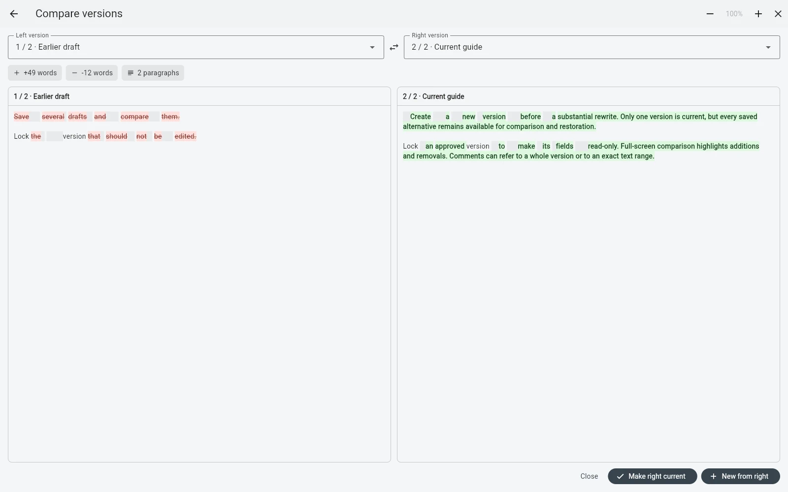

РедактураВерсии
Управление версиями рукописи без финал-финал-точно.docx.
Редактура должна делать изменения безопаснее, а не создавать лабиринт копий. Часто полезная единица истории — это глава, сцена или статья, а не полная копия всего проекта.
Почему копии всего проекта быстро превращаются в шум
Скопировать всю рукопись перед большой правкой кажется безопасным. Через несколько итераций начинается путаница: в какой копии самая новая глава 3, где комментарий редактора, в старой или новой папке менялась аннотация? Backup защищает от потери, но не всегда является хорошим интерфейсом для творческой истории.
Версионируйте то, что меняется
Если переписывается глава 7 — сохраните историю главы 7. Если статья требует серьёзного обновления — оставьте опубликованный вариант и создайте рабочую редакцию. История остаётся рядом с породившим её текстом, а лишнее состояние проекта не дублируется.

Имена версий должны объяснять смысл
Версия 2 сообщает мало. До структурной редакции, После редактора или Опубликовано 2026-08 через полгода всё ещё объясняют, зачем эта точка истории существует.
Блокируйте версии, которые фиксируют решение
Утверждённый, отправленный или опубликованный вариант сложнее случайно испортить, если он открывается только для чтения. Граница становится видимой, но текст остаётся доступен для просмотра и сравнения.
Сравнивайте до того, как возвращать старую формулировку
Возврат к прежней идее не должен означать два окна рядом и ручной поиск отличий. Специальный режим сравнения быстрее показывает добавленное, удалённое и изменённое и помогает решить, что действительно нужно вернуть.
Комментарии должны оставаться привязаны к контексту
Редакторская обратная связь полезна, пока понятно, к какому варианту и фрагменту она относится. Иначе комментарий «этот абзац непонятен» теряет смысл после перемещения или переписывания абзаца.
Backup всё равно нужен
Версии и резервные копии решают разные задачи. Версии помогают понимать осознанные творческие изменения. Backup защищает проект от случайной потери или повреждения. Серьёзному рабочему процессу нужны оба слоя.
Как это устроено в B-Maker
Главы, сцены и статьи могут иметь несколько именованных версий. Их можно дублировать, назначать текущими, блокировать, сравнивать, а комментарии хранить на уровне всего текста или конкретного фрагмента. Резервные копии проекта существуют отдельно.
Связанные гайды
Программа для романа · Для блогеров и технических авторов · Local-first письмо